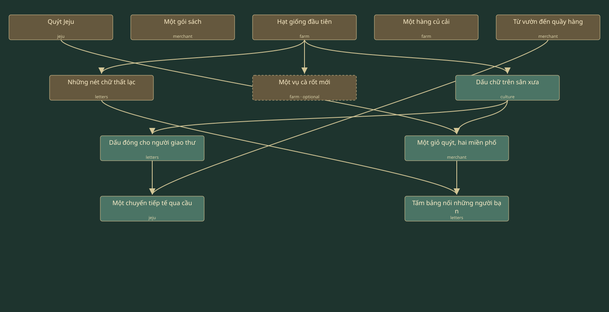
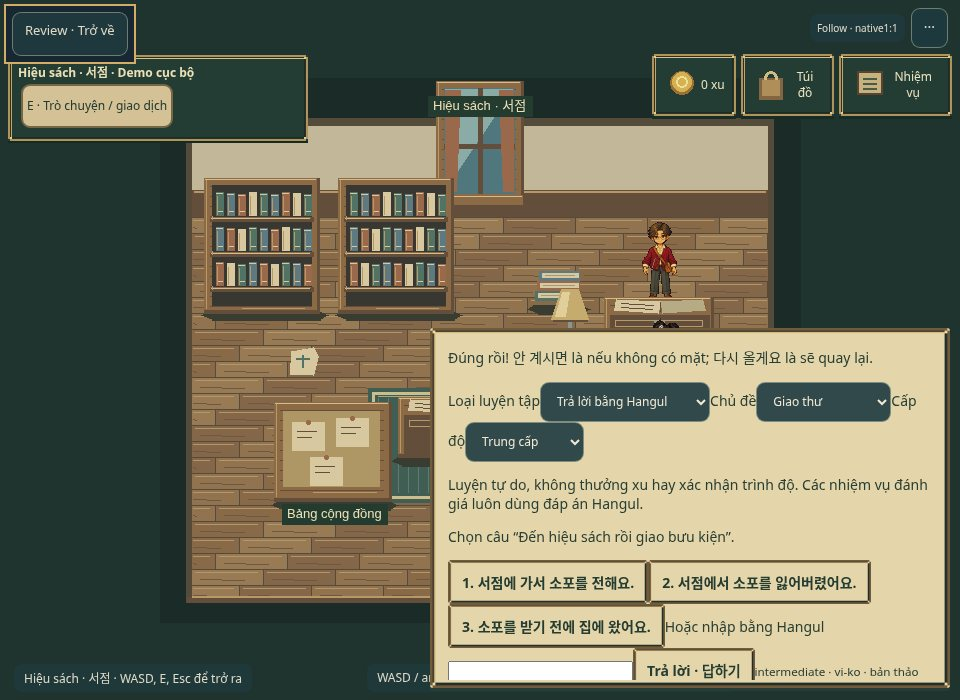
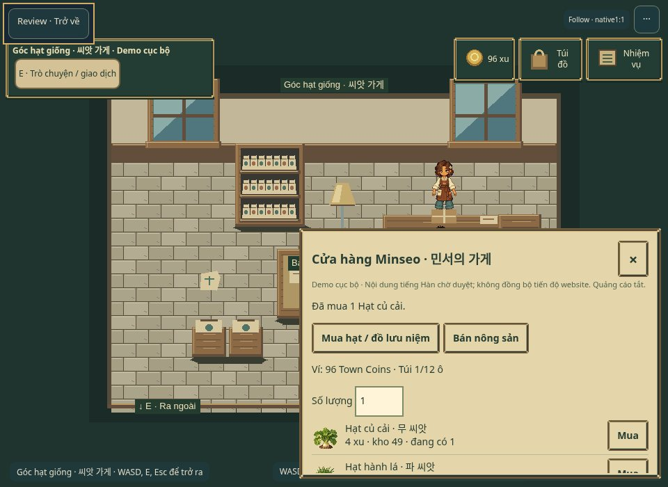

Korean Pixel Town · V4
Canvas và lượt mặc định hiện tại đều82/82PASS; timeout cũ giữ riêng, chưa chứng minh được nguyên nhân duy nhất. GPU/thiết bị thật chưa được chứng nhận. Candidate riêng tư chờ nghiệm thu mỹ thuật/gameplay và duyệt đúng manifest trước khi công khai. Tiếng Hàn: PENDING_HUMAN_REVIEW. Android/iPhone/GPU vật lý: NOT TESTED. Không phải phát hành thương mại. Ảnh preview nén để xem nhanh; liên kết PNG giữ pixel native không sửa.
FIXTURE_ALL_BEDS: fixture mỹ thuật được khởi tạo trước khi boot để kiểm tra36ô/sáu luống ở cùng stage; không phải tiến độ đã kiếm được. Video V01 và FARM_REWARD_READBACK.json là bằng chứng thao tác/timer/phần thưởng thật.
Sáu luống · mask riêng · vòng đời trực quan
Ba nội thất riêng · cùng Juni / NPC / engine
HUD và túi đồ thật · ba kích thước
Jeju · cầu → đường cong phía đông hanok → thềm cửa
Chỉ thay mask dẫn chân trong nút nối lát đá. 682 ô mở trong hai chunk; không thay ảnh đảo/cầu/nhà hay nguồn collision cũ. Video có và không có overlay; nước/tường/mái kiểm tra vẫn chặn.
12 nhiệm vụ / 5 tuyến / 2 nhánh / 3 hội tụ

JSON graph · 36 câu qua UI thật · 12/12 và ba trace thật. Hồ sơ tiếp tục trong video được lấy từ save đã kiếm được ở lượt farm trước, không bơm trạng thái sau khi bắt đầu. Không đồng bộ tiến độ website.
| Nhiệm vụ | Tuyến | NPC | Yêu cầu trước |
|---|
| Quýt Jeju | jeju | npc-harin | Tự do |
| Một gói sách | merchant | npc-minseo → npc-jiho | Tự do |
| Hạt giống đầu tiên | farm | npc-cheolsu | Tự do |
| Một hàng củ cải | farm | npc-nayeon | Tự do |
| Từ vườn đến quầy hàng | merchant | npc-minseo | Tự do |
| Những nét chữ thất lạc | letters | npc-eunji → npc-jiho | farm-first-seed-v1 |
| Một vụ cà rốt mới | farm | npc-nayeon | farm-first-seed-v1 |
| Dấu chữ trên sân xưa | culture | npc-seoyeon → npc-jiho | farm-first-seed-v1 |
| Dấu đóng cho người giao thư | letters | npc-eunji | culture-postcard-v4 |
| Một chuyến tiếp tế qua cầu | jeju | npc-minseo → npc-harin | shop-garden-market-v1, workshop-imprint-v4 |
| Một giỏ quýt, hai miền phố | merchant | npc-harin → npc-minseo | jeju-orchard-v1, culture-postcard-v4 |
| Tấm bảng nối những người bạn | letters | npc-jiho | town-first-delivery-v2, island-ledger-v4 |

Hangul qua UI thật · PNG gốc · browser/DPR
Giao dịch trong nội thất · PNG gốc · browser/DPRGameplay liên tục · không ghép cảnh
Bản H264 không cắt, đổi thời gian, đổi kích thước hay FPS. Nén để review; dùng PNG native để đánh giá pixel. Cả sáu video được ghi tuần tự từ candidate compiled cuối; không sửa vị trí, đồng hồ hay tiến độ sau khi bắt đầu. Profile tiếp tục từ save đã kiếm được được ghi rõ trong từng báo cáo.
V01 · Farm native cuối
V02 · Jeju hai chiều
V02 · Overlay collision
V03 · Ngoài trời → shop → giao dịch → trở ra
V04 · Ngoài trời → hiệu sách → Hangul → trở ra
V05 · Nhiệm vụ đan xen / Jeju / sai–đúng / thưởng
Các mục còn mở · Thu hoạch thực nhận · Fixture36ô được ghi rõ
Lượt mặc định mới82/82 · Sửa favicon, game giữ nguyên
Bằng chứng và giới hạn
QA thực tế · Báo cáo · Lỗi và lịch sử chạy · Hash bảo vệ · Phạm vi asset · Nguồn/quyền/nội dung · Mask native · Readback Phaser · Video provenance
Không có backend thật, multiplayer, quảng cáo hay ghi dữ liệu học viên. Tại thời điểm đóng gói11/11/2026, task này chưa thay bản Pages public; quyết định public tiếp theo phải có receipt gắn đúng manifest. Checkpoint cũ và rollback được giữ nguyên.